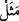

Nitekim el-Vâkıâtü’l-Mahmûdiyye’de böyle geçmektedir.
Bu âyetin tefsîrinin ‘Allah gökleri güneş, ay ve yıldızlarla; yeri de peygamberler,
âlimler ve âbidlerle nurlandırandır’ şeklinde olduğu da söylenmiştir.
Arâisü’l-Beyân’da der ki: “Âyette geçen gökler ve yerler ile mü’minin sûreti
kasdedilmiştir. Başı gökler, bedeni yerdir. Allah Teâlâ celâli ve yüceliği ile bu gökleri
ve yeri nurlandırmıştır. Çünkü başı işitme, görme, koklama, tatma ve konuşma nurlarıyla
süslemiştir. Gözün nûru Güneş’in ve Ay’ın, kulağın nûru Zühre ve Müşteri yıldızlarının,
burnun nûru Merih ve Zühal yıldızlarının, dilin nûru ise Utarid yıldızının nûru gibidir.
Bu ışık saçan seyyâreler başın burçlarında gezerler. Beden arzının nûru ise organlar,
âzâlar, adaleler, et, kan ve saçlardır. Bedendeki kemikler ise yeryüzündeki dağlar
mesâbesindedir.
İmam Zâhid şöyle buyurur: “Allah için “Nûr” denilebilir, ancak “aydınlık”
denilemez. Çünkü “aydınlık”, “karanlığın” zıddıdır. Halbuki Allah Teâlâ her iki zıddı
da yaratandır.”
Karanlığın zıddı olan nûr hâdistir, yâni sonradan yaratılmıştır. Çünkü hâdis olan bir
şeyin zıddı da hâdistir. Dolayısıyla Allah Teâlâ’nın ‘nûr’ diye isimlendirilmesi,
karanlığın zıddı olan nûru ilk olarak yaratanın O olması sebebiyledir.
Allah Teâlâ’nın nûr olması sâdece göklere ve yere izâfetle olmadığı halde nûrun bu
ikisine izâfe edilmesi, O’nun aydınlatma gücünün büyüklüğünü ifâde etmek içindir.
Çünkü gökler ve yer, büyüklük ve genişlikte iki misaldir. Allah Teâlâ: “...Genişliği
gökler ve yer kadar olan cennete koşun.” (Âl-i İmrân, 3/133) buyurmuştur.
Müftü Sa‘dî Hâşiye’sinde belirtildiğine göre ensar ve muhâcir ifâdeleriyle bütün
sahâbîler kasdedildiği gibi gökler ve yer ile de bütün âlem kasdedilmiştir. Allah
Teâlâ’nın hadis-i kudsîde Hz. Peygamber (s.a.) Efendimiz’e hitâben buyurduğu: “Eğer
sen olmasaydın felekleri yaratmazdım.”[168] sözü de buna benzer. Burada feleklerden
bütün âlemler kasdolunmuştur. Fakat büyüklüğü ve basîret ehilleri tarafından
görülebilirliği bakımından sadece felekler zikredilmiştir. Benim gönlüme doğan budur.
İşin hakîkatine ulaştıran yalnızca Allah’tır.
“O’nun nûrunun temsili, içinde lamba bulunan bir kandillik gibidir.” Buradaki
‘nûr’dan maksad, Allah Teâlâ’dan ışık saçan varlıklara feyezan eden O’nun nûrudur. O
da el-İrşâd’da belirtildiği üzere Kur’an-ı Mübîn’dir. Kur’an, delâlet ettiği şeylerin
açıklığı ve ihtivâ ettiği hidâyetin âşikârlığı bakımından içinde lamba bulunan bir
kandilliğe benzetilmiştir.
“ (Temsil)” ile hayret verici sıfat/özellik kasdedilmiştir. Yâni âyette ‘O’nun
nûrunun hayret verici sıfatı/vasfı…’ demektir. Nûrun, Allah Teâlâ’ya âid bir zamire
izâfe edilmesi onun Allah için kullanılmasının zâhirdeki mânâda olmadığına delildir.
Nitekim Envâru’t-tenzîl’de böyle denilmektedir.
“O lamba kristal bir fanus içindedir.” Duvardaki bir pencereye benzer ki kemer gibi
dışarıyı görmez. Yâni lambanın içinde bulunduğu kandil parlak saf bir camdan